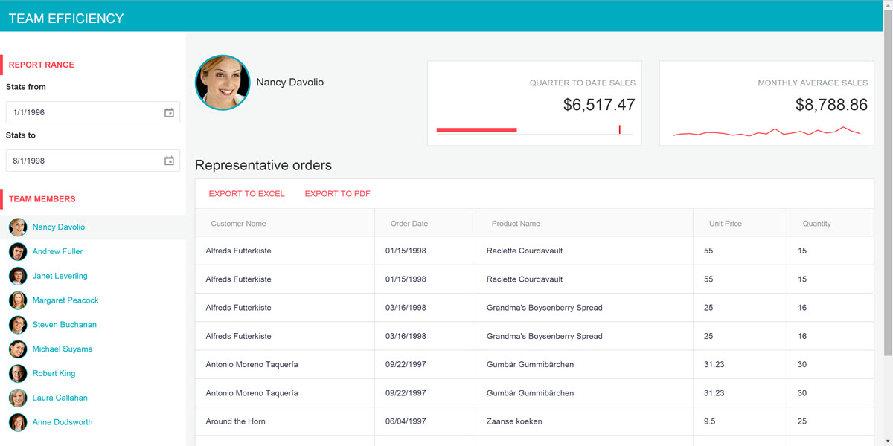

Introduction
Welcome to the UI for ASP.NET MVC quick-start guide. In this guided tutorial you'll learn how to install, configure, and utilize UI for ASP.NET MVC to build a rich single page dashboard application that works beautifully on any device.
What you're building
This guide will walk you through building Team Efficiency Dashboard, a single page app that does the following things:
- Connects rich chart visualizations and grids to a SQL data source
- Provides an interactive master/detail dashboard with filtering, sorting and exporting
- Responds to any device size including: mobile, tablet and desktop
If you follow along until the end, here is what the finished app will look like.

And here is what the app will look like on mobile.

UI for ASP.NET MVC vs Kendo UI widgets
From client-side point of view, the vanilla HTML/JavaScript Kendo UI widgets and the rendered UI for ASP.NET MVC represent the same thing and provide the same capabilities. However, the UI for ASP.NET MVC wrappers provide additional capabilities for use with ASP.NET MVC and tooling for VisualStudio. Refer to the documentation for a complete feature comparison.
Important Resources
Getting up and running
In this chapter you're going to start with the basics, including starting a new project, adding UI for MVC to your project, and installing the quick start template.
Create a new MVC project
UI for ASP.NET MVC can easily be added to an existing ASP.NET MVC project in just a few clicks using VisualStudio.
Start by creating a new ASP.NET MVC project. You'll use this project throughout the rest of this tutorial to build your application.
Exercise: Create a new MVC project
Click File > New Project
In the New Project dialog choose the ASP.NET Web Application template by expanding the "Templates" tree to Templates > Visual C# > Web

Give the application a name (ex: MyQuickStartApp)
Click OK to continue

In the New ASP.NET Project dialog, choose MVC from the 4.6 template selection
Click OK to finish
Install the quick start boilerplate
With the new project created, it's time to start building your app. For this guide, we've scaffolded out a boilerplate project to act as a starting point for the Team Efficiency Dashboard.
The boilerplate has an HTML page, the Northwind database and some server-side code you may find in a typical MVC project.
Exercise: Install the quick start boilerplate
Using the package manager console, run the following command
PM> Install-Package KendoQsBoilerplate
Alternatively, you can use the package manager GUI
From the Solution Explorer right-click References, then choose Manage NuGet Packages

Search for KendoQsBoilerplate

Click Install to continue
When the package installs you may be prompted to accept a license agreement for the NortwindDB, click I Accept to continue
It is normal for the quick start boiler plate to overwrite existing files, when prompted with a file conflict choose Yes to All

With the boilerplate installed, take a moment to run the application. If all went well, you should see something like this:

Convert to Telerik Application
At this point, you have the wire frame for a basic MVC application. Next you will be adding the UI for ASP.NET MVC to the application by using the convert to Telerik application tooling. When an application is converted to a Telerik application, all required HTML, CSS, JavaScript and .DLL libraries are added. This is the first step you would take to upgrade a new or existing MVC project to use Kendo.
Exercise: Convert to a Telerik Application
Stop the application if it is already running.
In the Solution Explorer right-click on the project name and select Telerik UI for ASP.NET MVC > Convert to Telerik Application. This will launch the Project Configuration Wizard, from here we can choose settings for our Telerik project.

For this tutorial your project will use CDN support. This means all Kendo resources are served from Telerik's content delivery network (CDN) versus relying on your server for the assets. Mark the box Use CDN support and click Next to continue.

Since the boilerplate is designed with Bootstrap, choose Bootstrap from themes select box so the theme matches the current look of the boilerplate. You'll change the theme later when you're ready to customize the look of the application.

Open \Views\Shared_Layout.cshtml find and remove the following script bundle @Scripts.Render("~/bundles/modernizr"). This script is included with the Kendo assets.
Next, find the CSS bundle @Styles.Render("~/Content/css") and move it just above the closing head tag </head> this will make sure that any custom styles are applied when you customize the application.
The final code of the head section should look like this:
<meta charset="utf-8" />
<meta name="viewport" content="width=device-width, initial-scale=1.0">
<title>@ViewBag.Title - UI for MVC / Kendo Quick Start Guide</title>
<link href="http://cdn.kendostatic.com/2015.3.1111/styles/kendo.common-bootstrap.min.css" rel="stylesheet" type="text/css" />
<link href="http://cdn.kendostatic.com/2015.3.1111/styles/kendo.mobile.all.min.css" rel="stylesheet" type="text/css" />
<link href="http://cdn.kendostatic.com/2015.3.1111/styles/kendo.dataviz.min.css" rel="stylesheet" type="text/css" />
<link href="http://cdn.kendostatic.com/2015.3.1111/styles/kendo.bootstrap.min.css" rel="stylesheet" type="text/css" />
<link href="http://cdn.kendostatic.com/2015.3.1111/styles/kendo.dataviz.bootstrap.min.css" rel="stylesheet" type="text/css" />
<script src="http://cdn.kendostatic.com/2015.3.1111/js/jquery.min.js"></script>
<script src="http://cdn.kendostatic.com/2015.3.1111/js/jszip.min.js"></script>
<script src="http://cdn.kendostatic.com/2015.3.1111/js/kendo.all.min.js"></script>
<script src="http://cdn.kendostatic.com/2015.3.1111/js/kendo.aspnetmvc.min.js"></script>
<script src="@Url.Content("~/Scripts/kendo.modernizr.custom.js")"></script>
@Styles.Render("~/Content/css")
Tip: Because the Convert to Telerik application, Upgrade Project, or Configure Project wizards modify the
_Layout.cshtmlfile, be sure to check position of any custom CSS declarations afterward.
Input Controls
Now that your app is ready for development, let's add some UI components. In this chapter we'll create Kendo DatePicker inputs using the UI for MVC fluent API.
Kendo Helper Overview
Server-side wrappers
Telerik UI for ASP.NET MVC is a set of server-side wrappers. A server-wrapper does the following.
- Allows the developer to configure a Kendo UI widget via C# or VB.NET code - set its value, data source etc.
- Renders the HTML and JavaScript needed to initialize the Kendo UI widget. The widget options propagate to the client-side via the widget initialization script.

Configuration
The Kendo HtmlHelper exposes all Kendo UI server wrappers.

Widget options
The widget options are exposed via fluent interface.

Below is an example of how a Numeric Text Box input is created:
@(Html.Kendo().NumericTextBox()
.Name("name") // set the name of the NumericTextBox
.Value(10) //set the value
.Spinners(false) // disable the spinners
)
Adding a Kendo DatePicker
Let's open the Index.cshtml page under the folder views/home/. The Index.cshtml page is where most of the application's UI lives. This page currently contains basic HTML inputs to collect date input from the user. To provide a better user experience, replace the standard HTML inputs with Kendo date picker controls. The Kendo date picker controls offer users a fly out calendar to choose a desired date.
Note: The Kendo date picker control is touch and mouse friendly. No additional code is necessary to support tablets and phones.
Exercise: Replace StatsFrom and StatsTo TextBoxes with Kendo Date Pickers
Open Views/Home/Index.cshtml
Find the StatsFrom text box
<!-- Stats From Date Picker -->
@Html.TextBox("StatsFrom", new DateTime(1996, 1, 1))
Replace the code with a Kendo date picker
<!-- Stats From Date Picker -->
@(Html.Kendo().DatePicker()
.Name("StatsFrom")
.Value(new DateTime(1996, 1, 1))
)
Find the StatsTo text box
<!-- Stats To Date Picker -->
@Html.TextBox("StatsTo", new DateTime(1996, 1, 1))
Replace the code with a Kendo date picker
<!-- Stats To Date Picker -->
@(Html.Kendo().DatePicker()
.Name("StatsTo")
.Value(new DateTime(1998, 8, 1))
)
The Kendo HTML helper's fluent interface let you configure their behavior and appearance. The code you just added uses the following properties:
- Name: Sets the rendered HTML element's id property.
- Value: Sets a default selected date value for the date picker
After you run your app with this change, you will see a calendar icon in the Stats from field. Click or tap the icon to reveal the date picker:

Scaffolding
In this chapter...
Upgrade the database
UI for MVC Scaffolding wizard
Kendo Grid
In this chapter...
Configuring Kendo Grid options
The DataSourceRequest object
Kendo ListView
In this chapter...
This ListView control
Adding a list view
Kendo Templates
Client Side
In this chapter...
Working with client side events
Kendo Datasource
In this chapter...
Working with the Kendo Datasource
Kendo Grid Ajax
In this chapter...
Creating a custom filter
Triggering a refresh from outside the grid
Kendo Charts
In this chapter...
Chart API
Monthly sales chart
Quarter to date sales chart
Go Responsive
In this chapter...
Responsive Grid
Responsive Panel
Kendo Themes
In this chapter...